継承戦の前提
- ホイコーロ国王の後継を、14人の王子の間で争う。
- 生き残った唯一の王子が正式な継承者となる。ただし「生き残る」「脱落」の解釈まで明確に定められているわけではない。
- 「手段を問わない」のは継承権の判定について。王子殺しが船内法で無罪になるという意味ではなく、護衛・捜査・司法も争いを左右する。
カキン王位継承戦の人物、出来事、作中の基礎資料を確認
人物や出来事の「詳細」、基本情報の各項目にある「この項目にメモ」から気付いたことを書いてください。メモは自動で保存します。あとでCodexに「修正メモを見て」と伝えるだけで大丈夫です。
所属・任務・関係王子から人物を探せます。名前を押すと人物詳細が開きます。
初期配置は当初の担当居室（後任は最初の確認配置）で、現在地や出航時の在室者一覧ではありません。「念：未確認」は使用不可を意味しません。親子説は未確定情報として区別します。
カテゴリ・関係王子などの各行は1つ選択できます。違う行の条件は組み合わせて絞り込みます。同じ項目をもう一度押すと解除します。
後の話の情報は隠しています。人物ごとに「後の話の情報を表示」で開けます（全体の設定は変わりません）。
ネタバレ非表示中は、能力・後の展開を検索しません。
能力・後の展開は検索対象外です。該当しそうな場合は、ネタバレを表示して同じ検索語で探せます。
人数には復元した枠や死亡・離脱した人物も含みます。原作の人数表とは集計範囲が異なる場合があります。
作中の出来事を時系列・話数別に確認できます。第420話までのネタバレを含みます。
出典への索引があるだけでは原作確認済みにしていません。411話以降の日付は暫定です。収録範囲は基礎資料の「収録範囲・出典の確認状況」で確認できます。
出来事は死亡・能力・後の展開を含みます。全画面共通のネタバレ設定で表示できます。
「全部」で全日程を通して確認できます。人物・場所・大まかなイベント種類を組み合わせて絞り込めます。
同じ話に登録された出来事をまとめて確認できます。人物・場所・種類でも絞り込めます。
作品内の問いと、日時・出典などの編集上の確認課題を分けています。登録上の未解決と、原作全話で未解決であることは同じではありません。
全体像から細かな条件へ
参加条件、守護霊獣、警護と司法、各勢力の能力や契約を整理。仕組みを読み、根拠の場面へ戻れるガイドです。
上から読むと基礎から詳細へ進めます。調べたい言葉があるときは目次や検索を使ってください。個々の人物の能力は人物一覧、実際に起きた順序は出来事一覧にまとめています。
初期表示は基本数値・船の構造・立場の説明です。ルールの詳細や実例には後の話で明かされる情報があるため、全画面共通のネタバレ設定で表示します。
該当する項目はありません。短い言葉で検索するか、ネタバレの表示設定を確認してください。
カキンでは性別にかかわらず国王の子を「王子」と呼び、生まれ順に第○王子と呼びます。番号が若ければ自動的に次の王になる、という仕組みではありません。正妻に表向きの序列はないと説明される一方、警護・監視の運用には上下の違いがあります。
呼称と順位の説明：第349話の王妃・王子紹介。監視の運用は「王子の警護人と王妃所属兵」で分けて説明します。
王子・王妃は人物台帳、船内の階層は出来事の場所記録に基づく開始時の情報です。現在の状況は下で分けて表示します。

各層と作中で確認できる主な場所を、縮尺を持たない模式図にしました。
参照：第359〜360話（王子居住区）、第378〜380話（下層の勢力・施設）。同じ層にある場所同士の位置関係は示していません。
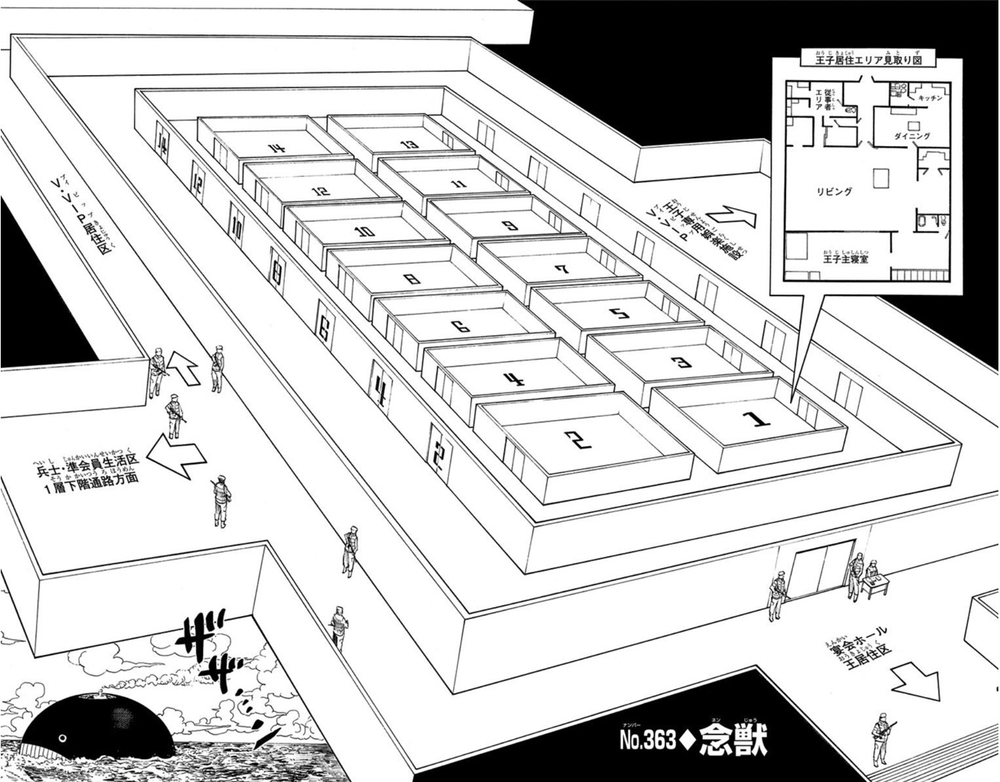
出航時は14人。以下の最新状態は死亡・身元などのネタバレを含みます。
人数は人物台帳の状態表記から集計します。肉体と人格の状態が異なる場合や身元が未確定の場合は、単純な生存人数として扱いません。船全体の乗船人数は根拠を確認できていないため掲載していません。
壺に血を落として手を差し入れる儀式。第349話では小さな存在が球状の物を口元へ運ぶが、儀式を受けた本人は何も起きなかったと話す。守護霊獣は王子のオーラを糧とし、王子本人には見えず、本人の意思で自由には操れません。念能力を使える王子でも見えない描写があり、「念を使えるか」だけでは判定できません。守護霊獣同士は殺し合わず、霊獣の憑いた人間を直接攻撃しないという共通原則があります。
守護霊獣と王子本人の念能力は別です。個々の守護霊獣の姿や能力は各王子の人物情報にまとめています。


参照：第349話（儀式・参加条件）、第360話（寄生型と視認）、第362話（守護霊獣の共通原則）。例外や未解明の条件は確定事項として加えていません。
| 段階 | 条件・扱い |
|---|---|
| 参加資格 | ナスビー＝ホイコーロの正室の子で、B・W号に乗船し、出航セレモニーに参加した者。 |
| 開始前 | セレモニーより前に候補者の誰かが死亡すれば、継承戦そのものが中止となる。 |
| 開始の瞬間 | 出港時の長い汽笛一発が鳴り終わった瞬間。乗船した時点とは異なる。 |
| 開始後 | 生き残った唯一名が正式な継承者。生き残った手段の是非は継承権では問わない。 |
| 未確定の部分 | 第363話で国王は「生き残る」の解釈も含めて継承戦と回答。生物学的な死以外の脱落を一律に認めない、とは確定していない。 |
ヌグイは参加資格を、国王の正室の子で、ブラックホエール号に乗船し、出航セレモニーに参加した者と説明します。開始前に候補者が死亡した場合は継承戦そのものが中止され、正式な開始は出航の汽笛が鳴り終わった瞬間です。開始後は生き残った唯一の王子が継承権を得るとされます。これはヌグイの説明です。
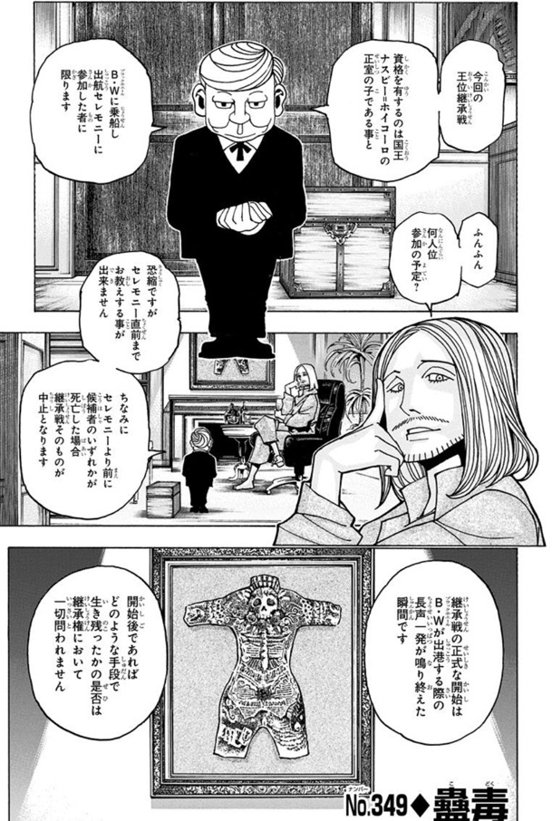
守護霊獣の直接攻撃が制限されても、王子本人や護衛の攻撃、操作・呪いなどによる間接的な作用まで安全になるわけではありません。また、王子が辞退を宣言するだけで儀式から離脱できるという手続きは確認されていません。第371話の「一人でも離脱すれば全員の念獣が消えるかもしれない」はクラピカの仮説です。
根拠の場面：第349話：参加条件・儀式 ／ 第362話：霊獣の本能（写真3） ／ 第363話：脱落の解釈 ／ 第371話：離脱の仮説。場面の詳細では出典と確認上の留保も読めます。
この編では「能力を持つ人」「能力で作られた存在」「能力の宿主」が別々の場合があります。姿が見えること、能力を自覚すること、自由に使えることを分けて読むと混乱しにくくなります。
| 用語 | 意味と読む際の注意 |
|---|---|
| オーラ・念能力 | オーラを用いる力。念に目覚めていることと、その人独自の能力や発動条件が判明していることは別。 |
| 系統 | 強化・変化・放出・具現化・操作・特質という分類。王子本人の系統を、その守護霊獣の系統へそのまま当てはめない。 |
| 念獣・守護霊獣 | 念獣は念に関わる生き物や存在。壺中卵の儀による守護霊獣はその一種で、船内のすべての念獣が王子の守護霊獣とは限らない。 |
| 寄生型 | 宿主のオーラを利用して働く型。宿主に自覚がなく操作できない場合がある。「寄生型だから必ず宿主を守る」とは限らない。 |
| 具現化・見える条件 | 普通の人にも見える念獣の例がある。一方、儀式の念獣は普通の人には見えず、王子にも特別な視認制限がある。 |
| 絶（ゼツ） | オーラを閉じる状態。能力の発動条件にも、契約違反への罰にもなる。絶ならあらゆる念の効果が消える、と一括りにしない。 |
| 制約・誓約 | 能力の条件やリスク。条件を厳しくすることが強い力につながるが、何をすれば発動・解除するかは個々の能力で異なる。 |
| 死後の念 | 死をきっかけに働く念の例がある。術者を殺せば能力も終わる、とは限らない。カミーラ本人の能力、私設兵の呪詛、ビヨンドの呪いはそれぞれ別の仕組み。 |
根拠の場面：第360話：寄生型の説明 ／ 第363話：王子の視認制限 ／ 第371話：見える念獣と制約 ／ 第373話：死後の念 ／ 第401話：強制的な絶。場面の詳細では出典と確認上の留保も読めます。
| 立場 | 作中での位置づけ |
|---|---|
| 王子・王妃 | 継承候補とその母。王子ごとに居室と陣営がある。 |
| 私設兵 | 王子が独自の人脈で集めた兵隊。第1王子の私設兵は正規国軍の資格も持つ。 |
| 王妃所属兵 | 国王軍から各王妃に割り当てられた正規兵。私設兵とは別に王子の居室へ配置される。 |
| 王室警備兵 | 王子の居室など王室警備に配置された国軍兵。第374話の図では、王妃所属兵の配置目的が「王室警備」か「監視」かも区別される。 |
| ハンター協会員 | 王子が個別に依頼したプロハンター。基本的に専属で身辺警護にあたる。 |
| 準協会員 | 私設兵と協会が連携して居住区外の警備に募った人員。便宜上の期限付きで、私設兵人数に括弧書きされた場合は内数。 |
| 従事者 | 兵士を兼ねる者と非戦闘員がいる。申請人数が多いほど居住区内に持ち込める家具・日用品などの荷物重量の上限が増える。 |
| 司法省 | 船内の事件捜査や法的手続きに関わる。 |
| 三大マフィア | 下層で活動する別々の組織。王子陣営との関係もそれぞれ異なる。 |
所属、配置、共闘は別の関係として扱います。人物一覧の「人員区分」タグから私設兵・王妃所属兵・王室警備兵・協会員（護衛）、人物グループ「従事者」から従事者を絞り込めます。組織の行動や人数は、関連する人物・出来事の記録で確認できます。
王妃は警護人を使って、下位の王妃と王子が謀反を企んでいないか監視しています。ただし下位の王妃が上位の王妃とその王子を監視することは許されません。第360話p.190では、第11・12・14王子の配置例も説明されています。
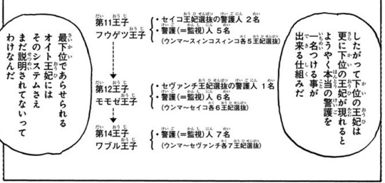
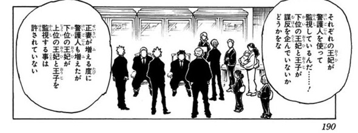
第374話の兵力図は、王子の私設兵・ハンター協会員・従事者と、母である王妃の所属兵を記載しています。準協会員は居住区外の警備にあたるため協会と連携する期限付きの資格です。第4王子は私設兵15名（うち準協会員5名）と従事者5名で、記載人数は計20名。準協会員5名をさらに加算しません。従事者には非戦闘員も含まれます。同じ王妃の監視兵は複数の子の欄に繰り返し載っているため、王妃別の集計では一度だけ数えます。
人物タグでは「第○王子私設兵」「第○王妃所属兵」を所属、「人員区分」を私設兵・王妃所属兵・王室警備兵・協会員（護衛）の横断分類、「準協会員」を資格として分けています。従事者は人物グループ「従事者」で絞り込めます。第374話の人数はその場面の配置記録で、現在人数や王妃の全保有兵力とは区別します。
第348話の「王子一人につき従事者15人まで」を同行人員の基本枠とし、各王子が枠を使い切ったという前提で復元した表です。私設兵・王妃所属兵・護衛ハンター・メイドなどを基本枠の内訳として数えます。第2〜第5王子の準協会員各5人は枠外に一度だけ加えます。
参照：第348話（15人枠・準協会員）、第360〜361話（監視と初期警護）、第368話（人員合流）、第374話（後日の人数表）。各王子の職種内訳には推定が含まれます。第374話の表は出航から37時間30分後の場面に挿入されたもので、初期配置を直接示す表ではありません。
継承戦が始まっても、通常の法的な責任や王族の保護は残ります。誰が攻撃したかだけでなく、証拠を示せるか、どの権限で拘束するかが重要になります。
| 制度・状況 | 確認できる扱い | 混同しやすい点 |
|---|---|---|
| 王子殺し・防衛権 | 王子殺しは重罪と説明される。第1王子は派遣兵に、襲撃時や襲撃の意思が明らかな場合の防衛権行使を許可する。 | 防衛権を主張した人物の言い分と、実際に正当防衛だったかは別。 |
| 王族特権と捜査 | 第371話では状況証拠だけの第6王妃拘束要請が却下され、72時間の監視聴取になる。 | 72時間はこの件の措置。王族に対するすべての捜査が必ず同じ手順とは限らない。 |
| 準戒厳令・第380話 | 第2層と第3層の往来が管理され、室内待機・ID確認などが実施される。 | 後の特殊戒厳令と、発令場面・権限の範囲を分ける。 |
| 特殊戒厳令・第410／416話 | 軍部による三権統合と司法省の統合司令本部化が宣言される。第416話の放送では軍の許可なく動く者を即射殺対象と通告。 | 第410話で発令根拠と国王の委任状が求められ、委任状は作成中と回答。発令側の主張を、疑惑の立証済み事実とは扱わない。 |
第415話の日時表記には整合しない点があります。発令日時の扱いと、その場で告げられた規則は別に確認してください。
根拠の場面：第360話：王子殺し ／ 第363話：防衛権 ／ 第371話：王族保護と監視聴取 ／ 第380話：通行・ID ／ 第410話：発令根拠の照会 ／ 第416話：発令時の通告。場面の詳細では出典と確認上の留保も読めます。
クラピカは1014号室で、各陣営の参加者に念を教えます。念の情報が一部の陣営だけに偏る状況を変える一方、参加者には情報収集・監視・勧誘など、それぞれの思惑があります。
根拠の場面：第369話：第1回参加者 ／ 第370話：白線と2週間の説明 ／ 第371話：継続の判断 ／ 第411話：第2回講習。場面の詳細では出典と確認上の留保も読めます。
下層では、カキンの三大マフィアと幻影旅団などの思惑が交差します。「ケツモチ」は組織の後ろ盾となる王子のこと。組員全員をその王子の護衛や私設兵として数える関係ではありません。
| 組織 | 後ろ盾 | 主な位置づけ |
|---|---|---|
| シュウ＝ウ一家 | 第3王子チョウライ | 第4層で人と物流の利ザヤを得る。 |
| エイ＝イ一家 | 第4王子ツェリードニヒ | 富裕層との闇取引の斡旋を収入源とする。モレナの方針は他の二家が守ろうとする均衡と衝突する。 |
| シャ＝ア一家 | 第7王子ルズールス | 第5層で物資全般を取り仕切る。 |
均衡：オニオールらは、力を持たない者へ新たな力が渡ることや、旅団が既存の秩序を崩すことを警戒します。これは組織側の考え方で、継承戦の公式な勝敗条件ではありません。
二線者：正当な後継者になれない国王の子孫。生まれてすぐ顔に傷を付けられ、表舞台へ出ないことを条件に生存を許されると説明されます。王族に血縁があることと、継承資格があることを分ける必要があります。
根拠の場面：第371話：後ろ盾の王子 ／ 第378話：均衡と各組織 ／ 第378話：二線者。場面の詳細では出典と確認上の留保も読めます。
モレナの能力「恋のエチュード（サイキンオセン）」は、唾液を介して発症者を増やし、殺害によるレベル上昇と念能力の発現につながります。次の交渉ゲームは加入を決める過程であり、ゲームの結論だけで全条件が満たされるわけではありません。
3条件の順番は問いません。第410話のボークセンは最後の条件が未達のレベル0で、完全加入・念の覚醒が済んだ状態ではありません。
| 段階・対象 | 説明された数値・効果 |
|---|---|
| 発症者の枠 | モレナを含め最大23名（第378話の能力解説）。現在の生存人数や質問への回答人数と同じ意味ではない。 |
| 完全加入 | 条件を満たすとレベル1。 |
| 殺害による加算 | 一般人は＋1、念能力者は＋10、王子は＋50。 |
| レベル21 | レベル20を超えると独自の念能力が発現。 |
| レベル100 | 0患者となり、自分の感染集団を形成できる。 |
能力の感染、完全加入、念の覚醒、別の感染集団を作れる段階を区別します。特質系約0.033%というモレナの調査値は系統の割合で、この能力による感染や覚醒の成功率ではありません。
根拠の場面：第378話：能力解説 ／ 第409話：加入条件 ／ 第410話：レベルと完全加入。場面の詳細では出典と確認上の留保も読めます。
親のモレナは7枚を表、子のボークセンは5枚を裏にして置きます。子が親のカードを指定して説明を受け、そのカードを「墓場」へ送った後、親が子のカードを1枚選び、表にして墓場へ送ります。繰り返して、子に最後に残る1枚が結論になります。
| 側 | カード | 407〜410話の説明 |
|---|---|---|
| 親・7枚 | 目的 | 招待して仲間に誘う理由を説明する。 |
| 力 | モレナの能力を説明する。 | |
| 質問A | 何でも何度でも質問できる。ただし目的と能力は専用カードで指定する。 | |
| 質問B | 質問Aの最後の質問について、さらに1問だけ聞ける。回答はYes・No・Yes and Noの3種類。 | |
| Yes | 仲間になる場合に期待する役割・能力を説明する。408・409話では未選択。410話でゲーム終了後に加入・能力管理の説明を行う。 | |
| No | NoとXの違いを説明する。Noは確定的な拒絶・完全な離別、Xはゲームそのものを無効にする。 | |
| 取引D | 「小さなお願い」を果たすと墓場からカードを戻せる。無理ならやめてよいがDも墓場へ行く。子の残り2枚が指定の最後の機会。409話ではキスが要求され、Xを戻す。 | |
| 子・5枚 | Yes | 加入の結論。408話では墓場へ送られ、409話末にRの交換先として選ぶ。410話ではレベル0で完全加入の条件はまだ未達。 |
| No | 加入しないという確定的な拒絶。408話では「死」と示される。 | |
| R | 最後に残れば子の墓場から好きな1枚を手元へ戻せる。409話末ではボークセンの手元にRが残り、Yesを交換先として選ぶ。 | |
| Joker | YesかNoに変えられる。 | |
| X | ゲームを無効にして離脱。記憶を消す意味ではない。モレナは再接触を避け、周囲を巻き込まないよう配慮すると約束する。 |
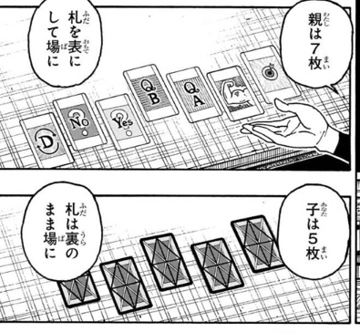
第407話末では、ボークセンが「子の裏向きカードは自分が選ぶ」という条件を出し、モレナが受け入れて開始を宣言したところまで。実際のカード選択・目的や能力の開示・加入の結論はまだ描かれません。不正や能力による誘導への疑いはボークセンの推測として、説明されたルールと分けています。
第408話の親の指定順は「目的 → 力 → No」、子の墓場への順番は「Joker → Yes → X」。残る子はNoとRの2枚です。取引Dも加入の結論も未決定の段階で、特殊戒厳令の放送が入ります。Xでの離脱後の配慮はモレナの約束であり、履行や記憶消去を確認した場面ではありません。
第408話でボークセンは「特質系の素質があるが念は未覚醒」と説明されます。モレナの調査による「特質系約0.033%（約3000人に1人）」は系統の割合で、恋のエチュードによる感染・覚醒の成功率ではありません。船内に50〜60人という説明もモレナの推計です。
第409話では「取引D → 質問A」の順に指定。キスの取引でXを戻し、No・Rを表にして確認した後、3枚を混ぜ直します。再びXが墓場へ送られ、最後の2枚を同時に開くとボークセンにR、モレナにNoが残りました。ボークセンはRの交換先として、離脱のXではなくYesを選びます。選択の理由・不正の有無は、この話ではまだ明かされません。
モレナの説明では、仲間になるには「ゲームの結論がYes」「キスによる能力の感染」「仲間が殺人している現場に居合わせる」の3条件を全て満たす必要があります。順番は問いません。409話でキスとYesの選択は確認できますが、3条件の全充足や念の覚醒までを確認した場面ではありません。
質問Aでは、アジトがB・W号内の第2層と第3層の間にあると回答。「念能力によって作られている」にはYes and No、仲間の人数はボークセンを含めて21人という問いにYesと回答します。中央ゲート周辺という正確な位置はボークセンの推測です。質問での人数を登録人物数や兵力集計へそのまま置き換えません。
第410話でモレナは不正を指摘し、ゲームとカードも能力の一部で、不正時には操作系能力が自動発動して子はYesかNoしか選べなくなると説明します。Rに凹みの目印を付け、最後に握り潰して証拠を消した手順はモレナの推理です。ボークセンのYes選択を、Xも選べる状態での自由な選択と扱いません。
ボークセンはレベル0で最後の加入条件が未達。全条件を満たすとレベル1の仲間になり、レベル21で念能力が覚醒、レベル100で自分の仲間を作れるようになります。410話でも殺人現場への居合わせ・完全加入・念の覚醒は描かれません。モレナはアプリのようにレベル・位置・能力等を管理すると説明し、ボークセンは対抗策を得るため、帰還前に仲間についての案内を求めます。
陣営同士の協力関係と、念能力で強制される契約は分けて読む必要があります。第401話のロンギの「透明言葉」は、自発的な署名を必須とする操作系条件型の能力です。ロンギには先に嘘偽りなく説明する必要があります。
| 項目 | 第401話で説明された条件 |
|---|---|
| 和平の対象 | 第5王子と第14王子・第8王妃。互いの王子・王妃と所属兵への妨害・攻撃をしない。 |
| 期限と更新 | 次の日曜日の午前9時まで。同時刻に第5王子の使いが1014号室内にいれば1週間自動更新。 |
| 違反の罰 | クラピカ側が協定を破った場合に能力が発動し、1週間の強制的な絶。双方へ同じ罰が自動でかかる契約ではない。 |
| 別の付与条件 | 第5王子の離脱または王子が残り2名になるまでにビヨンドの子を見つければ、一度だけ能力を使える賞与。王子の中に該当者なしと判明しても達成となる。 |
| 破棄と約束 | 第5王子による破棄で付与条件は消滅。その後も調査した場合の再契約は、ロンギの個人的な約束として別に読む。 |
「誰が本心で話しているか」と「その人物の推測が事実か」も別です。王子の中にビヨンドの子がいるという話はロンギの推測で、契約の説明だけで特定の王子の血縁は確定しません。
根拠の場面：第401話：能力と署名 ／ 第401話：血縁の推測 ／ 第401話：契約条項。場面の詳細では出典と確認上の留保も読めます。
ロンギが語る詛贄者は、ビヨンドが自身の子供に仕込んだ、死後に発動する呪いの担い手です。ロンギの説明では、ソエモノは全員念能力者で、生まれた時から念能力に覚醒しています。これはビヨンドがかけた念の「攻撃」の副次効果とされます。
参照：第401話、15〜19ページ（ロンギの説明）。念能力に覚醒していることと、各人の固有能力やその条件・効果が判明していることは区別します。
カミーラ私設兵の呪詛は別系統の計画：第389話では不可持民出身の私設兵が各王子の呪詛を担当します。長く、近くで標的を想うほど呪力が強まり、術者の死で発動すると説明されます。効くまでの期間は距離や防御の条件によって異なり、「必ず数時間で死亡」とは限りません。
カミーラ本人の蘇生能力、私設兵の呪詛、ビヨンドの詛贄者、王子の守護霊獣は、持ち主も発動条件も別です。ビヨンドの子がどの王子か、呪いの標的が誰かも、この説明だけでは確定しません。
根拠の場面：第389話：カミーラ私設兵の呪詛 ／ 第401話：ロンギの説明と推測。
第406話「神器」では、継承戦に使われる三種の宝とそれぞれの役割が示されます。
| 神器 | 役割 |
|---|---|
| 壺中卵 | 継承戦参加者のために使う儀式の壺。 |
| 儀座禅仏 | 継承戦を見守る御神体。 |
| 吉兆丸 | 次代王に渡される継承の宝剣。 |
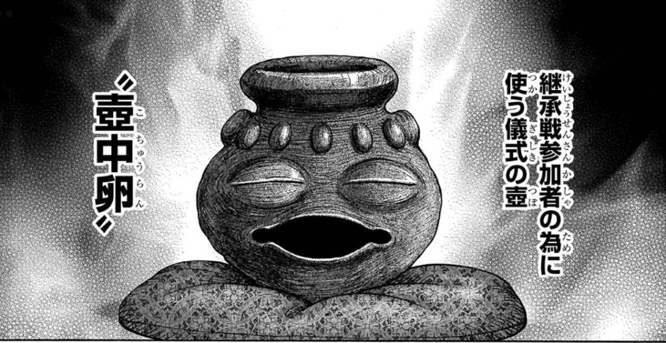
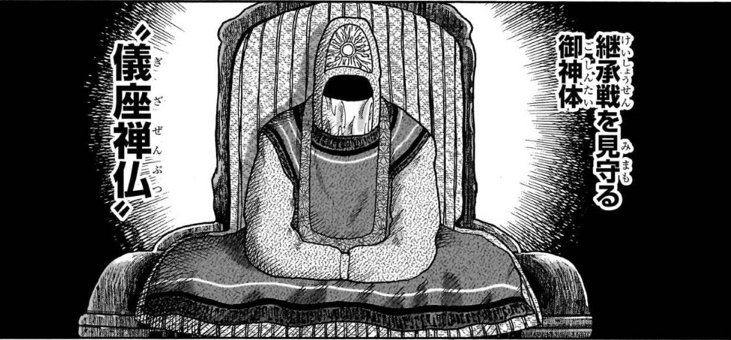
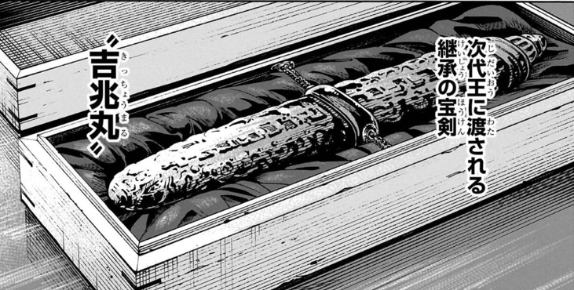
クロロは三種の神器を継承戦のメインシステムと捉え、盗賊の極意を進化させるための盗みを計画しています。祭壇が第1層にあるという見立てはクロロの推測です。実際の所在・盗難の実行・継承戦への影響は、この話では確定しません。
345話でジンは、実際に暗黒大陸へ向かう人数を最大25人程度と見積もり、ビヨンドの依頼で集まった10人だけが全員ではないと指摘します。これは参加者の確定名簿ではなく、ジンによる人数の見積もりです。
協会の適性審査で排除された協専ハンターは、カキン国営サイトの王子護衛募集を通じて乗船しています。ビル・カートン・サイールドらの「ビヨンドチーム」という所属と、各王子の護衛という配置は別に扱います。協専ハンターはプロハンターであり、私設兵が得る期限付きの「準協会員」資格とは同じものではありません。
374話では、準協会員は居住区外の警備を主に担当する約150人の人員として説明されます。王子居室の従事者・私設兵とは資格と任務を分け、私設兵の内数として記された準協会員は二重加算しません。
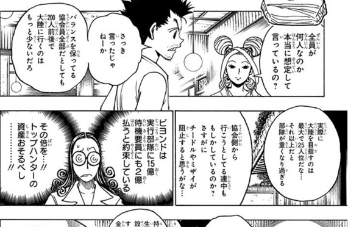
参照：第345〜346話（人数見積もり・適性審査）、第361話（協専ハンターの乗船経路）、第374話（準協会員）。確認できた人物を人物一覧の「ビヨンドチーム」タグにまとめています。
344話のジンの説明では、過去の探検で持ち帰られた「五大厄災」と、各ルートで得られるとされる資源が対になっています。過去の帰還記録があることと、安全に回収できることは別です。
| ルート・地域 | リスク | 資源・期待されるリターン | 過去の記録 |
|---|---|---|---|
| 北東沿岸の険しい山脈 | 人飼いの獣パプ | 無尽石。一粒で一日に約2万kWを出力すると説明される。 | ベゲロセ連合国の調査団1,000人から帰還7人。 |
| 北北東・400kmほど奥の迷宮都市 | 植物兵器ブリオン | 万病に効くとされる万能香草。 | サヘルタ合衆国の特殊部隊は帰還2人。 |
| メビウス湖の南東 | 双尾の蛇ヘルベル | 究極の長寿食ニトロ米。 | ミンボ共和国の調査では99%が犠牲となり、帰還11人。 |
| メビウス湖の南西 | ガス生命体アイ | 様々な液体の元となる三原水。 | オチマ連邦は帰還8人。帰還者のうち2人は正気を失う。 |
| 錬金植物メタリオンを目指したルート | 不死の病ゾバエ | 錬金植物メタリオン。 | ビヨンドが同行したクカンユ王国の遠征は帰還6人。持ち帰った植物は病により枯れる。 |
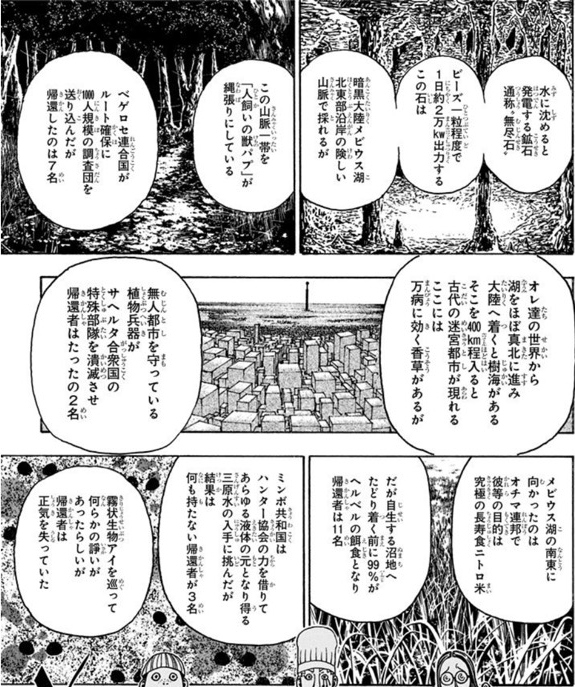
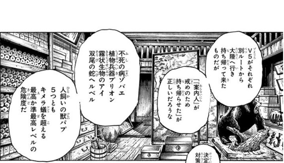
参照：第344話。位置は作中の方角表現に沿うもので、船の現在位置を示すものではありません。
誰でも安全に離脱できる方法は確認されていません。第371話の離脱による念獣消滅は仮説です。第383話では船外脱出が阻まれますが、妨害した存在の正体や仕組みまでは判明していません。
死亡の報告、肉体の状態、人格の所在、能力の作用を分けて確認する必要があります。第363話の国王の回答も、脱落を単純な判定表にできるほど明確ではありません。最新状態は「王子の人数と状況」で確認できます。
守る目的があっても、それが常に最優先になる保証はないとクラピカは説明しています。攻撃や能力のすべてを無効にする共通能力があるわけではありません。
クロロの盗みの計画は示されていますが、盗難によって継承戦が終了するという結果は確認されていません。個人の計画と実際の作用を分けます。
第374話の配置表、出航時の復元案、現在の人物台帳は時点と対象が異なります。準協会員が私設兵の内数である場合や、同じ王妃の兵が複数欄に載る場合もあり、単純な足し算はできません。
根拠の場面：第363話：脱落の定義 ／ 第367話：守護の目的 ／ 第371話：離脱の仮説 ／ 第383話：船外脱出 ／ 第406話：神器の計画。場面の詳細では出典と確認上の留保も読めます。
件数は登録済みの出来事数です。登録がある話も全場面を網羅したとは限りません。「未収録」は対象外を意味せず、入力・確認が必要な範囲です。